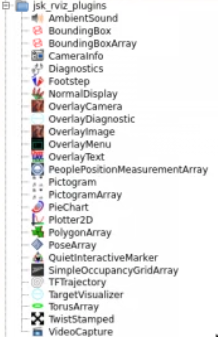
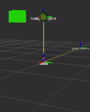
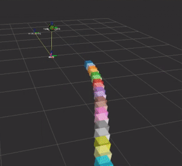
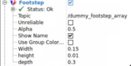
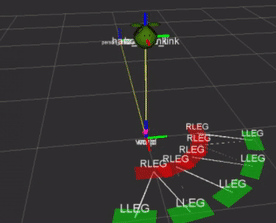
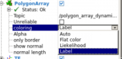
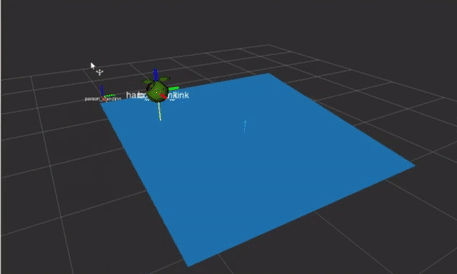
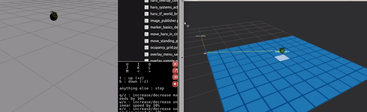

# Unit 2: BoundingBoxes, RobotFootsteps, PolygonArray, OccupancyGrids, and PictogramsWow, that's a long title!<br>Here you will learn how to use the most important jsk Markers. There are more, but these are the most important ones, which are close to how the basic markers work.Wow, that's a long title!
Here you will learn how to use the most important jsk Markers. There are more, but these are the most important ones, which are close to how the basic markers work.
You have to select Add Element in RVIZ and go to the jsk folder. There you will have all the markers you will learn about in this course:You have to select Add Element in RVIZ and go to the jsk folder. There you will have all the markers you will learn about in this course:
<img src="img/rvizmarkers_unit2_elementlist.png"/>
Bounding boxes can be used for loads of things. You can represent simplified versions of the world as seen by a Depth sensor, virtual walls given to the robot so that it can travel in certain areas, or even find a way of visualising data.Bounding boxes can be used for loads of things. You can represent simplified versions of the world as seen by a Depth sensor, virtual walls given to the robot so that it can travel in certain areas, or even find a way of visualising data.
There are two types: BoundingBox and BoundingBoxArray. Depending on what you want to do, you will select one or the other.<br><b>The rule of thumb is:</b><br><i>If each marker is not related, use different BoundingBox publishers. If they are related, use the BoundingBoxArray.</i>There are two types: BoundingBox and BoundingBoxArray. Depending on what you want to do, you will select one or the other.
The rule of thumb is:
If each marker is not related, use different BoundingBox publishers. If they are related, use the BoundingBoxArray.
Here you have an example of how to create a flying, rotating, and changing-shape bounding box:Here you have an example of how to create a flying, rotating, and changing-shape bounding box:
<p style="background:green;color:white;">bounding_box.py</p>bounding_box.py
#!/usr/bin/env pythonimport rospyfrom jsk_recognition_msgs.msg import BoundingBoximport mathfrom geometry_msgs.msg import Pose, Vector3import tfimport std_msgs.msg"""# BoundingBox represents an oriented bounding box. Header header geometry_msgs/Pose pose geometry_msgs/Vector3 dimensions # size of bounding box (x, y, z) # You can use this field to hold value such as likelihood float32 value uint32 label"""def dummyBoundingBoxPublisher(): pub = rospy.Publisher('/dummy_bounding_box', BoundingBox, queue_size=1) rospy.init_node('dummyBoundingBoxPublisher_node', anonymous=True) rate = rospy.Rate(25) boundingBox_object = BoundingBox() i = 0 pose_object = Pose() dimensions_object = Vector3() minimum_dimension = 0.2 boundingBox_object.label = 1234 while not rospy.is_shutdown(): h = std_msgs.msg.Header() h.stamp = rospy.Time.now() # Note you need to call rospy.init_node() before this will work h.frame_id = "world" boundingBox_object.header = h sinus_value = math.sin(i/10.0) boundingBox_object.value = sinus_value # Change Pose to see effects pose_object.position.x = 1.0 pose_object.position.y = 0.0 pose_object.position.z = sinus_value # ai, aj, ak == roll, pitch, yaw quaternion = tf.transformations.quaternion_from_euler(ai=0, aj=0, ak=sinus_value) pose_object.orientation.x = quaternion[0] pose_object.orientation.y = quaternion[1] pose_object.orientation.z = quaternion[2] pose_object.orientation.w = quaternion[3] dimensions_object.x = sinus_value/10 + minimum_dimension dimensions_object.y = minimum_dimension dimensions_object.z = minimum_dimension # Assign pose and dimension objects boundingBox_object.pose = pose_object boundingBox_object.dimensions = dimensions_object pub.publish(boundingBox_object) rate.sleep() i += 1if __name__ == '__main__': try: dummyBoundingBoxPublisher() except rospy.ROSInterruptException: pass<p style="background:green;color:white;">END bounding_box.py</p>END bounding_box.py
So, things to talk about:So, things to talk about:
pub = rospy.Publisher('/dummy_bounding_box', BoundingBox, queue_size=1)As with the basic markers, these bounding boxes are published in topics.As with the basic markers, these bounding boxes are published in topics.
boundingBox_object = BoundingBox()boundingBox_object.label = 1234h = std_msgs.msg.Header()h.stamp = rospy.Time.now() # Note you need to call rospy.init_node() before this will workh.frame_id = "world"boundingBox_object.header = hHere you can see that it is very similar to basic markers. Instead of <b>id,</b> it is called label. The header works exactly the same.Here you can see that it is very similar to basic markers. Instead of id, it is called label. The header works exactly the same.
boundingBox_object.value = sinus_valueThis is only a value that is contained in each bounding box, useful for containing some extra data. It is not visualised directly through the RVIZ.This is only a value that is contained in each bounding box, useful for containing some extra data. It is not visualised directly through the RVIZ.
# Change Pose to see effectspose_object.position.x = 1.0pose_object.position.y = 0.0pose_object.position.z = sinus_value# ai, aj, ak == roll, pitch, yawquaternion = tf.transformations.quaternion_from_euler(ai=0, aj=0, ak=sinus_value)pose_object.orientation.x = quaternion[0]pose_object.orientation.y = quaternion[1]pose_object.orientation.z = quaternion[2]pose_object.orientation.w = quaternion[3]Position and orientation.Position and orientation.
dimensions_object.x = sinus_value/10 + minimum_dimensiondimensions_object.y = minimum_dimensiondimensions_object.z = minimum_dimensionThe dimensions of the box. In this case, they change over time.The dimensions of the box. In this case, they change over time.
# Assign pose and dimension objectsboundingBox_object.pose = pose_objectboundingBox_object.dimensions = dimensions_objectpub.publish(boundingBox_object)Finally, you assign and publish here.Finally, you assign and publish here.
Note that bounding boxes don't assign colors. They are auto-assigned or set in the RVIZ element.Note that bounding boxes don't assign colors. They are auto-assigned or set in the RVIZ element.
<p style="background:#EE9023;color:white;">Exercise U2-1</p>Exercise U2-1
Execute this script in your package. See what happens and why.<br>Try the following EXTRA:<br><ul><li>Make the bounding box react when the Haro Robot gets near it</li></ul>Execute this script in your package. See what happens and why.
Try the following EXTRA:
<p style="background:#EE9023;color:white;">END Exercise U2-1</p>END Exercise U2-1
You should see something similar to this:You should see something similar to this:
<img src="img/rvizmarkers_unit2_boundingbox.gif"/>
Now, what if you need related bounding boxes? Use BoundingBoxArray.<br>Here you have an example of how to create a sequence of bounding boxes that describe different movements:Now, what if you need related bounding boxes? Use BoundingBoxArray.
Here you have an example of how to create a sequence of bounding boxes that describe different movements:
<p style="background:green;color:white;">bounding_box_array.py</p>bounding_box_array.py
#!/usr/bin/env pythonimport rospyfrom jsk_recognition_msgs.msg import BoundingBox, BoundingBoxArrayimport threadingimport mathfrom geometry_msgs.msg import Pose, Vector3import tfimport std_msgs.msgimport random"""[jsk_recognition_msgs/BoundingBoxArray]: std_msgs/Header header uint32 seq time stamp string frame_id jsk_recognition_msgs/BoundingBox[] boxes"""class BoundingBoxArrayPublisher(object): def __init__(self): self.pub = rospy.Publisher('/dummy_bounding_box_array', BoundingBoxArray, queue_size=1) self.init_boundingboxarray() self.state = 0 def get_init_time(self): self.init_seconds = rospy.get_time() def publish_once(self, boundingBoxArray_object): rate = rospy.Rate(10) while not rospy.is_shutdown(): connections = self.pub.get_num_connections() if connections > 0: self.pub.publish(boundingBoxArray_object) break else: rospy.loginfo("Waiting for Subscriber...") rate.sleep() def init_boundingboxarray(self, num_boxes=30): self.boundingBoxArray_object = BoundingBoxArray() h = std_msgs.msg.Header() h.stamp = rospy.Time.now() # Note you need to call rospy.init_node() before this will work h.frame_id = "world" self.boundingBoxArray_object.header = h self.minimum_dimension = 0.2 self.init_x_position = 1.0 for i in range(num_boxes): new_box = BoundingBox() new_box.header = h new_box.pose = Pose() new_box.pose.position.x = self.init_x_position + i*self.minimum_dimension new_box.dimensions = Vector3() new_box.dimensions.x = self.minimum_dimension new_box.dimensions.y = self.minimum_dimension new_box.dimensions.z = self.minimum_dimension new_box.label = i new_box.value = i*self.minimum_dimension self.boundingBoxArray_object.boxes.append(new_box) self.publish_once(self.boundingBoxArray_object) def start_bounding_box_array_demo(self): rate = rospy.Rate(5) self.get_init_time() i = 0 while not rospy.is_shutdown(): now = rospy.get_time() dif_seconds = now - self.init_seconds if i == 20: self.state += 1 i = 0 if self.state > 3: self.state = 0 else: pass else: pass for index, box in enumerate(self.boundingBoxArray_object.boxes): index_value = index/10.0 angle = dif_seconds + index_value if self.state == 0: self.boundingBoxArray_object.boxes[index].pose.position.x = self.init_x_position + index*self.minimum_dimension self.boundingBoxArray_object.boxes[index].pose.position.y = math.sin(angle) self.boundingBoxArray_object.boxes[index].pose.position.z = 0.0 elif self.state == 1: self.boundingBoxArray_object.boxes[index].pose.position.x = self.init_x_position + index*self.minimum_dimension self.boundingBoxArray_object.boxes[index].pose.position.y = 0.0 self.boundingBoxArray_object.boxes[index].pose.position.z = math.sin(angle) elif self.state == 2: self.boundingBoxArray_object.boxes[index].pose.position.x = self.init_x_position + index*self.minimum_dimension self.boundingBoxArray_object.boxes[index].pose.position.y = math.sin(angle) self.boundingBoxArray_object.boxes[index].pose.position.z = math.cos(angle) else: self.boundingBoxArray_object.boxes[index].pose.position.x = math.sin(angle) self.boundingBoxArray_object.boxes[index].pose.position.y = math.cos(angle) self.boundingBoxArray_object.boxes[index].pose.position.z = 0.0 self.publish_once(self.boundingBoxArray_object) rate.sleep() i += 1 def start_demo(): rospy.init_node('dummyBoundingBoxArrayPublisher_node', anonymous=True) boundingbox_array_object = BoundingBoxArrayPublisher() try: boundingbox_array_object.start_bounding_box_array_demo() except rospy.ROSInterruptException: boundingbox_array_object.close()if __name__ == '__main__': start_demo()<p style="background:green;color:white;">End bounding_box_array.py</p>End bounding_box_array.py
Although it seems more complex, it is actually exactly the same thing that you did with a single bounding box, only now, you are generating a bunch of them and saving them in an array. That's it.Although it seems more complex, it is actually exactly the same thing that you did with a single bounding box, only now, you are generating a bunch of them and saving them in an array. That's it.
In this code, the positions of the bounding boxes and the way they evolve change, creating some interesting effects.In this code, the positions of the bounding boxes and the way they evolve change, creating some interesting effects.
<p style="background:#EE9023;color:white;">Exercise U2-2</p>Exercise U2-2
Execute this script in your package. See what happens and why.<br>Try the following EXTRA:<br><ul><li>Make it change the way it moves depending on the distance of Haro to a certain point in space. You will need to know about TFs to work this out.</li></ul>Execute this script in your package. See what happens and why.
Try the following EXTRA:
How do you calculate distance and angle between two TF frames? Here is an example:How do you calculate distance and angle between two TF frames? Here is an example:
<p style="background:green;color:white;">tf_haro_to_object_listener.py</p>tf_haro_to_object_listener.py
#!/usr/bin/env pythonimport sysimport rospyimport mathimport tffrom geometry_msgs.msg import Twist, Vector3if __name__ == '__main__': rospy.init_node('tf_listener_haro_to_person') listener = tf.TransformListener() if len(sys.argv) < 3: print("usage: tf_haro_to_object_listener.py parent child") else: follower_model_name = sys.argv[1] model_to_be_followed_name = sys.argv[2] topic_to_publish_name = "/"+str(follower_model_name)+"_to_"+str(model_to_be_followed_name)+"_tf_translation" # We will publish a Twist message but it's positional data not speed, just reusing an existing structure. tf_translation = rospy.Publisher(topic_to_publish_name, Twist ,queue_size=1) rate = rospy.Rate(10.0) ctrl_c = False follower_model_frame = "/"+follower_model_name model_to_be_followed_frame = "/"+model_to_be_followed_name def shutdownhook(): # works better than the rospy.is_shut_down() global ctrl_c ctrl_c = True rospy.on_shutdown(shutdownhook) while not ctrl_c: try: (trans,rot) = listener.lookupTransform(follower_model_frame, model_to_be_followed_frame, rospy.Time(0)) translation_object = Vector3() translation_object.x = trans[0] translation_object.y = trans[1] translation_object.z = trans[2] angular = math.atan2(translation_object.y, translation_object.x) linear = math.sqrt(translation_object.x ** 2 + translation_object.y ** 2) cmd = Twist() cmd.linear.x = linear cmd.angular.z = angular tf_translation.publish(cmd) except (tf.LookupException, tf.ConnectivityException, tf.ExtrapolationException): continue rate.sleep()<p style="background:green;color:white;">end tf_haro_to_object_listener.py</p>end tf_haro_to_object_listener.py
<p style="background:#EE9023;color:white;">END Exercise U2-2</p>END Exercise U2-2
The effect that you should see is the following:The effect that you should see is the following:
<img src="img/rvizmarker_unit2_boundingboxarray.gif"/>
For walking robots, this is really useful. Through these messages, you can publish a marker that represents the footsteps and the sequence. This is vital for knowing why your robot is falling, or if the next step will make it fall or collide into something.For walking robots, this is really useful. Through these messages, you can publish a marker that represents the footsteps and the sequence. This is vital for knowing why your robot is falling, or if the next step will make it fall or collide into something.
Here is the message type used from jsk_footstep_msgs package, type FootstepArray.Here is the message type used from jsk_footstep_msgs package, type FootstepArray.
"""[jsk_footstep_msgs/FootstepArray]:std_msgs/Header header uint32 seq time stamp string frame_id jsk_footstep_msgs/Footstep[] footsteps[jsk_footstep_msgs/Footstep]: uint8 RIGHT=2uint8 LEFT=1# Constants to visualize progress --> This doesn't change anything, it might be some legacy codeuint8 REJECTED=3uint8 APPROVED=4## limb_indicator valuesuint8 LLEG=1uint8 RLEG=2uint8 LARM=5uint8 RARM=6uint8 leg ## value should be one of limb_indicator values.geometry_msgs/Pose pose ## 'pose' represents nominal pose. It may be an end-effector of limb.duration duration# optional parametersuint32 footstep_groupgeometry_msgs/Vector3 dimensions ## cube [length(x), width(y), height(z)]geometry_msgs/Vector3 offset ## offset from pose to center of cubefloat32 swing_heightfloat32 cost"""To visualise the message in RVIZ, after adding its element, all you have to do is select the topic. That's it. There are some interesting variables, like the group color and the dimensions of each footstep: To visualise the message in RVIZ, after adding its element, all you have to do is select the topic. That's it. There are some interesting variables, like the group color and the dimensions of each footstep:
<img src="img/rvizmarkers_unit2_footstepselement.png"/>
To publish this kind of message:To publish this kind of message:
self.pub = rospy.Publisher('/dummy_footstep_array', FootstepArray, queue_size=1)The publisher, of course.The publisher, of course.
footstep_object = Footstep()footstep_object.leg = footstep_object.RLEGfootstep_object.pose.position.x = pos_x / 2.0footstep_object.pose.position.y = pos_y / 2.0quaternion = tf.transformations.quaternion_from_euler(ai=0, aj=0, ak=yaw)footstep_object.pose.orientation.x = quaternion[0]footstep_object.pose.orientation.y = quaternion[1]footstep_object.pose.orientation.z = quaternion[2]footstep_object.pose.orientation.w = quaternion[3]footstep_object.duration = rospy.Duration.from_sec(0.2)You create the Footstep Object. Then, you set the following:<br><ul><li>leg: Here you state the type of leg. There are various options available. It was designed to have a biped, therefore, you have only RightLeg and LeftLeg options. You also have RightArm and LeftArm options. You have: LLEG=1, RLEG=2, LARM=5, and RARM=6. You also have the option of setting them to REJECTED=3 or APPROVED=4. Depending on the type selected, it will change the color and the TAG.</li><li>pose: Where the Footstep Marker will be.</li><li>duration: It should affect the duration of the footsteps, but there is no other effect. This is changed in the RVIZ element options, once added</li></ul>You create the Footstep Object. Then, you set the following:
footstep_object.footstep_group = group_num# Not shown in RVIZ, for locomotion purposes onlyfootstep_object.swing_height = 2.0footstep_object.cost = 3.25And these are the optional values. Here you can assign a group to each footstep, and color them in RVIZ based on the group they are from.<br>The swing height and the cost are variables for locomotion, not represented in RVIZ.And these are the optional values. Here you can assign a group to each footstep, and color them in RVIZ based on the group they are from.
The swing height and the cost are variables for locomotion, not represented in RVIZ.
h = std_msgs.msg.Header()h.stamp = rospy.Time.now() # Note you need to call rospy.init_node() before this will workh.frame_id = "world"self.footstepArray_object.header = hself.footstepArray_object.footsteps.append(new_footstep)self.publish_once(self.footstepArray_object)Don't forget the headers and the frame in reference to what represents it. Finally, append the new footstep and publish it.Don't forget the headers and the frame in reference to what represents it. Finally, append the new footstep and publish it.
Here you have an example of a dummy generator of footsteps in a circle:Here you have an example of a dummy generator of footsteps in a circle:
<p style="background:green;color:white;">footsteps.py</p>footsteps.py
#!/usr/bin/env pythonimport rospyfrom jsk_footstep_msgs.msg import Footstep, FootstepArrayimport mathfrom geometry_msgs.msg import Pose, Vector3import tfimport std_msgs.msgimport randomclass FootStepArrayPublisher(object): def __init__(self): self.pub = rospy.Publisher('/dummy_footstep_array', FootstepArray, queue_size=1) self.init_footstep_array() self.state = 0 def get_init_time(self): self.init_seconds = rospy.get_time() def publish_once(self, object_to_publish): rate = rospy.Rate(10) while not rospy.is_shutdown(): connections = self.pub.get_num_connections() if connections > 0: self.pub.publish(object_to_publish) break else: rospy.loginfo("Waiting for Subscriber...") rate.sleep() def generate_new_footstep(self, pos_x=0, pos_y=0, yaw=0, is_right=True, is_leg=True, group_num = 1, regected=False, approved=False): footstep_object = Footstep() if is_leg: if is_right: footstep_object.leg = footstep_object.RLEG footstep_object.pose.position.x = pos_x / 2.0 footstep_object.pose.position.y = pos_y / 2.0 else: footstep_object.leg = footstep_object.LLEG footstep_object.pose.position.x = pos_x footstep_object.pose.position.y = pos_y footstep_object.pose.position.z = 0.0 else: if is_right: footstep_object.leg = footstep_object.RARM footstep_object.pose.position.x = pos_x / 2.0 footstep_object.pose.position.y = pos_y / 2.0 else: footstep_object.leg = footstep_object.LARM footstep_object.pose.position.x = pos_x footstep_object.pose.position.y = pos_y footstep_object.pose.position.z = 1.5 if regected: footstep_object.leg = footstep_object.REJECTED if approved: footstep_object.leg = footstep_object.APPROVED # ai, aj, ak == roll, pitch, yaw quaternion = tf.transformations.quaternion_from_euler(ai=0, aj=0, ak=yaw) footstep_object.pose.orientation.x = quaternion[0] footstep_object.pose.orientation.y = quaternion[1] footstep_object.pose.orientation.z = quaternion[2] footstep_object.pose.orientation.w = quaternion[3] footstep_object.duration = rospy.Duration.from_sec(0.2) # Optional Values footstep_object.footstep_group = group_num # Not shown in RVIZ, for locomotion purposes only footstep_object.swing_height = 2.0 footstep_object.cost = 3.25 return footstep_object def init_footstep_array(self): self.footstepArray_object = FootstepArray() new_footstep = self.generate_new_footstep() h = std_msgs.msg.Header() h.stamp = rospy.Time.now() # Note you need to call rospy.init_node() before this will work h.frame_id = "world" self.footstepArray_object.header = h self.footstepArray_object.footsteps.append(new_footstep) self.publish_once(self.footstepArray_object) def start_demo(self): rate = rospy.Rate(1) self.get_init_time() i = 0 is_right = (i % 2 == 0) #is_leg = (i % 3 == 0) is_leg = True max_steps = 10 while not rospy.is_shutdown(): angle = i/5.0 is_right = (i % 2 == 0) #is_leg = (i % 3 == 0) is_leg = True group_num = i % 2 new_footstep = self.generate_new_footstep( pos_x=math.sin(angle), pos_y=math.cos(angle), yaw=-angle, is_right=is_right, is_leg = is_leg, group_num = group_num) # The path will appear in the order you append, whether you append once at a time or a lot self.footstepArray_object.footsteps.append(new_footstep) if len(self.footstepArray_object.footsteps) > max_steps: self.footstepArray_object.footsteps.pop(0) i += 1 self.publish_once(self.footstepArray_object) rate.sleep() def main_start_demo(): rospy.init_node('dummyFootStepArrayPublisher_node', anonymous=True) footstep_array_object = FootStepArrayPublisher() try: footstep_array_object.start_demo() except rospy.ROSInterruptException: passif __name__ == '__main__': main_start_demo()Bear in mind that if you don't remove the footsteps from the array, they will stay there forever. That's why the <b>pop</b> method is used in the example:Bear in mind that if you don't remove the footsteps from the array, they will stay there forever. That's why the pop method is used in the example:
if len(self.footstepArray_object.footsteps) > max_steps: self.footstepArray_object.footsteps.pop(0)<p style="background:green;color:white;">END footsteps.py</p>END footsteps.py
<p style="background:#EE9023;color:white;">Exercise U2-3</p>Exercise U2-3
Execute the footsteps.py script and see the effect.<br>Try this as an EXTRA:<ul><li>Make the footsteps appear below the standing person when it moves. You will have to access its TF and base the footsteps frame on it. Then, move it with cmd_vel.</li></ul>Execute the footsteps.py script and see the effect.
Try this as an EXTRA:
<p style="background:#EE9023;color:white;">END Exercise U2-3</p>END Exercise U2-3
The basic script should give you something like this:The basic script should give you something like this:
<img src="img/rvizmarkers_unit2_footstepsdemo.gif"/>
These arrays are used in systems like table_top detection, object surface_segmentation, and so on. It's widely used in perception. It allows you to represent surfaces based on its normal and the perimeter points. You can do any shape you want, filled or only the perimeter.These arrays are used in systems like table_top detection, object surface_segmentation, and so on. It's widely used in perception. It allows you to represent surfaces based on its normal and the perimeter points. You can do any shape you want, filled or only the perimeter.
You will use <b>PolygonArray</b> from the package <b>jsk_recognition_msgs</b>.You will use PolygonArray from the package jsk_recognition_msgs.
"""[jsk_recognition_msgs/PolygonArray]: std_msgs/Header header uint32 seq time stamp string frame_id geometry_msgs/PolygonStamped[] polygons std_msgs/Header header uint32 seq time stamp string frame_id geometry_msgs/Polygon polygon geometry_msgs/Point32[] points float32 x float32 y float32 z uint32[] labels float32[] likelihood"""In this example, you have various shapes and also dynamically changing polygons in movement and shape. But the basics are the same:In this example, you have various shapes and also dynamically changing polygons in movement and shape. But the basics are the same:
To create a square, you will have to:To create a square, you will have to:
p = PolygonStamped()p.header = headerp.polygon.points = [Point32(x=1.0, y=1.0), Point32(x=-1.0, y=1.0), Point32(x=-1.0, y=-1.0), Point32(x=1.0, y=-1.0)]msg = PolygonArray()header = Header()header.frame_id = "world"header.stamp = rospy.Time.now()msg.header = headermsg.polygons = [p]msg.labels = [0]msg.likelihood = [np.random.ranf()]pub.publish(msg)Here you generate the points; in this case, four.<br>Then, you select the world frame to base it there. And then, you add the PolygonStamped to the PolygonArray.<br>Give a label to each PolygonStamped added in the polygons.<br>As for the likelihood, this will be used for some color classification in RVIZ. This is used a lot in perception to indicate that the surface is correct or has a great probability of being wrong. In this case, it's given a random number.Here you generate the points; in this case, four.
Then, you select the world frame to base it there. And then, you add the PolygonStamped to the PolygonArray.
Give a label to each PolygonStamped added in the polygons.
As for the likelihood, this will be used for some color classification in RVIZ. This is used a lot in perception to indicate that the surface is correct or has a great probability of being wrong. In this case, it's given a random number.
To visualise it, RVIZ always selects the element and the topic. An interesting option is the coloring, which can be done automatically (as in the likelihood) or given a flat color:To visualise it, RVIZ always selects the element and the topic. An interesting option is the coloring, which can be done automatically (as in the likelihood) or given a flat color:
<img src="img/rvizmarkers_unit2_polygonelement.png"/>
<p style="background:green;color:white;">polygon_array.py</p>polygon_array.py
#!/usr/bin/env pythonimport rospyfrom jsk_recognition_msgs.msg import PolygonArrayfrom geometry_msgs.msg import Polygon, PolygonStamped, Point32from std_msgs.msg import Headerfrom math import sin, cos, piimport numpy as npdef SquarePolygon(header): p = PolygonStamped() p.header = header p.polygon.points = [Point32(x=1.0, y=1.0), Point32(x=-1.0, y=1.0), Point32(x=-1.0, y=-1.0), Point32(x=1.0, y=-1.0)] return p def RectanglePolygon(header): p = PolygonStamped() p.header = header p.polygon.points = [Point32(x=-1.0, y=1.0, z=1.0), Point32(x=-2.0, y=1.0, z=1.0), Point32(x=-2.0, y=-1.0, z=1.0), Point32(x=-1.0, y=-1.0, z=1.0)] return pdef CirclePolygon(header): p = PolygonStamped() p.header = header for i in range(100): theta = i / 100.0 * 2.0 * pi x = 1.0 * cos(theta) + 3.0 y = 1.0 * sin(theta) p.polygon.points.append(Point32(x=x, y=y)) return p # stardef StarPolygon(header): p = PolygonStamped() p.header = header p.polygon.points = [Point32(x= .0000, y= 1.0000 + 3.0), Point32(x= .2245, y= .3090 + 3.0), Point32(x= .9511, y= .3090 + 3.0), Point32(x= .3633, y= -.1180 + 3.0), Point32(x= .5878, y= -.8090 + 3.0), Point32(x= .0000, y= -.3820 + 3.0), Point32(x= -.5878, y= -.8090 + 3.0), Point32(x= -.3633, y= -.1180 + 3.0), Point32(x= -.9511, y= .3090 + 3.0), Point32(x= -.2245, y= .3090 + 3.0)] return pdef DynamicPolygon(header): """ Dynamicly changing poligon """ p = PolygonStamped() p.header = header # Minimum 3, otherwise the normals can't be calculated and gives error. random_number_edges = np.random.randint(low=3, high=15,size=1)[0] for i in range(random_number_edges): point_object = Point32(x= np.random.ranf(), y= np.random.ranf()) p.polygon.points.append(point_object) return p def MovingSquare(header): """ Dynamicly moving Square """ p = PolygonStamped() p.header = header #print header.stamp.nsecs/100000000.0 dynamic_position_val = sin(header.stamp.nsecs/1000000000.0) dynamic_position_cos = cos(header.stamp.nsecs/1000000000.0) #print dynamic_position_val p.polygon.points = [Point32(x=dynamic_position_val+1.0, y=dynamic_position_val+1.0, z=dynamic_position_val), Point32(x=dynamic_position_val-1.0, y=dynamic_position_val+1.0, z=dynamic_position_cos), Point32(x=dynamic_position_val-1.0, y=dynamic_position_val-1.0, z=dynamic_position_cos), Point32(x=dynamic_position_val+1.0, y=dynamic_position_val-1.0, z=dynamic_position_val)] return p def sample_demo(): """ Draws a star, circle, rectangle and square """ rospy.init_node("polygon_array_sample") pub = rospy.Publisher("~output", PolygonArray, queue_size=1) r = rospy.Rate(10) while not rospy.is_shutdown(): msg = PolygonArray() header = Header() header.frame_id = "world" header.stamp = rospy.Time.now() msg.header = header msg.polygons = [SquarePolygon(header), RectanglePolygon(header), CirclePolygon(header), StarPolygon(header)] msg.labels = [0, 1, 2, 3] msg.likelihood = [np.random.ranf(), np.random.ranf(), np.random.ranf(), np.random.ranf()] pub.publish(msg) r.sleep() def dynamic_custom_polygon_demo(): rospy.init_node("polygon_array_dynamic") # /polygon_array_dynamic/output pub = rospy.Publisher("~output", PolygonArray, queue_size=1) r = rospy.Rate(5) while not rospy.is_shutdown(): msg = PolygonArray() header = Header() header.frame_id = "world" header.stamp = rospy.Time.now() msg.header = header msg.polygons = [DynamicPolygon(header)] msg.labels = [0] msg.likelihood = [np.random.ranf()] pub.publish(msg) r.sleep() def dynamic_moving_square_demo(): rospy.init_node("polygon_array_dynamic_square") # /polygon_array_dynamic/output pub = rospy.Publisher("~output", PolygonArray, queue_size=1) r = rospy.Rate(25) while not rospy.is_shutdown(): msg = PolygonArray() header = Header() header.frame_id = "world" header.stamp = rospy.Time.now() msg.header = header msg.polygons = [MovingSquare(header)] msg.labels = [0] msg.likelihood = [np.random.ranf()] pub.publish(msg) r.sleep() if __name__ == "__main__": #sample_demo() #dynamic_custom_polygon_demo() dynamic_moving_square_demo()<p style="background:green;color:white;">END polygon_array.py</p>END polygon_array.py
<p style="background:#EE9023;color:white;">Exercise U2-4</p>Exercise U2-4
Execute the polygon_array.pyscript and see the effect.<br>Try this as an EXTRA:<ul><li>Create a virtual four-wall room around HaroRobot and make them react when Haro gets closer to their position by changing their colors. You can do that by changing the <b>likelihood</b>.</li><li>Make this virtual room's walls change shape, from square to star, when HaroRobot is turning, simulating perception time to detect when turning.</li></ul>Execute the polygon_array.pyscript and see the effect.
Try this as an EXTRA:
<p style="background:#EE9023;color:white;">END Exercise U2-4</p>END Exercise U2-4
The basic script should be something like this:The basic script should be something like this:
<img src="img/rvizmarkers_unit2_polygons.gif"/>
This is used a lot in navigation algorithms to indicate which regions of the map, divided in cells, have obstacles or are free.This is used a lot in navigation algorithms to indicate which regions of the map, divided in cells, have obstacles or are free.
"""[jsk_recognition_msgs/SimpleOccupancyGridArray]: std_msgs/Header header uint32 seq time stamp string frame_id jsk_recognition_msgs/SimpleOccupancyGrid[] grids std_msgs/Header header uint32 seq time stamp string frame_id float32[4] coefficients float32 resolution geometry_msgs/Point[] cells float64 x float64 y float64 z """It's an array, and therefore, you can represent multiple colored grids. The color is normally assigned automatically, a different one for each grid.<br>Each grid is of the type SimpleOccupancyGrid. As you can see in the message definition, there are TWO headers. One for the array and one for each grid. The relevant one is for each grid and that will condition the representation.It's an array, and therefore, you can represent multiple colored grids. The color is normally assigned automatically, a different one for each grid.
Each grid is of the type SimpleOccupancyGrid. As you can see in the message definition, there are TWO headers. One for the array and one for each grid. The relevant one is for each grid and that will condition the representation.
occupancy_grid_array = SimpleOccupancyGridArray()free_cell_array = []cell_separation = 0.05offset = 0.0x = 1.0y = 1.0z = 0.0free_cell_array.append(Point(x, y , z ))# Freefree_grid = SimpleOccupancyGrid()free_grid.header.frame_id = "world"free_grid.header.stamp = now# Orientation of plane normal, [x_vector_value, y_vector_value, z_vector_value, -height], practical effectsfree_grid.coefficients = [0,0, 1, 0]# Size of each square side in the gridfree_grid.resolution = 0.05 #5cm resolution# Here we specify the position of each square in the gridfree_grid.cells = free_cell_arrayoccupancy_grid_array.grids.append(free_grid)occupancy_grid_array.header.stamp = nowoccupancy_grid_array.header.frame_id = "world"p.publish(occupancy_grid_array)Some elements to comment on:<br><ul><li>You have basically three different elements embedded:<br>The lowest is the free_cell_array. It has all the positions of all the tiles of each grid.<br>Then, you have the SimpleOccupancyGrid, which has all those positions inside the <b>cells</b> variable, defined in the free_cell_array.<br>And the highest is the <b>SimpleOccupancyGridArray</b>. This one has all the grids defined inside it.</li><li>SimpleOccupancyGrid has some variables worth explaining:<br><b>coefficients</b>: Although it seems like statistical data, in reality, it is the orientation of the grid.<br><b>resolution</b>: Size of each tile in the grid<br></li></ul>Some elements to comment on:
Here you have an example of multiple ways to use it and one where an occupancy grid is implemented. Using two grids, one that represents free spaces and one that is occupied, it reads data from a topic called <b>/haro_world_baselink_tf_translation,</b> which will publish the translation of the HaroRobot to the world frame, giving more or less the position in the grid.Here you have an example of multiple ways to use it and one where an occupancy grid is implemented. Using two grids, one that represents free spaces and one that is occupied, it reads data from a topic called /haro_world_baselink_tf_translation, which will publish the translation of the HaroRobot to the world frame, giving more or less the position in the grid.
<p style="background:green;color:white;">occupancy_grid.py</p>occupancy_grid.py
#!/usr/bin/env pythonimport rospyfrom jsk_recognition_msgs.msg import SimpleOccupancyGridArray, SimpleOccupancyGridfrom geometry_msgs.msg import Point, Vector3import randomimport numpy as npimport tfOCP_DIM_ATRIX = 10CELL_SEP_MAX = 0.5CELL_OFFSET_MAX = CELL_SEP_MAX/2.0def cells(x_offset, cell_separation=0.05, random_z=False, z_init = 0): """ Z value is referenced to the one stated in the coefficients -array[3] """ ret = [] for i in range(0, 20): for j in range(0, 20): if random_z: z_value = random.random() + z_init else: z_value = z_init ret.append(Point(x = cell_separation * i + x_offset, y = cell_separation * j, z = z_value)) return retdef update_free_ocup_cellarrays(occupancy_matrix, cell_separation=CELL_SEP_MAX, offset=CELL_OFFSET_MAX): """ occupancy_matrix = np.zeros((dim,dim), dtype = 'bool') """ free_cell_array, ocup_cell_array = init_cells() for (x,y), value in np.ndenumerate(occupancy_matrix): if value: ocup_cell_array.append(Point(x = cell_separation * x + offset, y = cell_separation * y + offset, z = 0)) else: free_cell_array.append(Point(x = cell_separation * x + offset, y = cell_separation * y + offset, z = 0)) return free_cell_array, ocup_cell_arraydef update_occupancy_matrix(matrix_pos): occupancy_matrix = init_occupancy_matrix(matrix_dim=OCP_DIM_ATRIX) x_len = occupancy_matrix.shape[0] y_len = occupancy_matrix.shape[1] if not(matrix_pos >= x_len*y_len): x_pos = matrix_pos / x_len y_pos = matrix_pos % x_len occupancy_matrix[x_pos][y_pos] = True return occupancy_matrixdef get_haro_world_pos(): haro_pose = None try: haro_pose = rospy.wait_for_message('/haro_world_baselink_tf_translation', Vector3, timeout=1) except: rospy.loginfo("Current haro pose not ready yet, retrying") return haro_posedef update_occupancy_matrix_tf(): """ Be careful with the grid size. """ x_pos = 0 y_pos = 0 occupancy_matrix = init_occupancy_matrix(matrix_dim=OCP_DIM_ATRIX) haro_pose = get_haro_world_pos() if haro_pose: x_len = occupancy_matrix.shape[0] y_len = occupancy_matrix.shape[1] CELL_SEP_MAX x_pos_raw = int(haro_pose.x / CELL_SEP_MAX) y_pos_raw = int(haro_pose.y / CELL_SEP_MAX) x_pos = min([x_pos_raw,x_len-1]) y_pos = min([y_pos_raw,y_len-1]) occupancy_matrix[x_pos][y_pos] = True return occupancy_matrixdef init_occupancy_matrix(matrix_dim=OCP_DIM_ATRIX): return np.zeros((matrix_dim,matrix_dim), dtype = 'bool')def init_cells(): return [], []def ocup_matrix_test(): r = rospy.Rate(1) while not rospy.is_shutdown(): occupancy_matrix = update_occupancy_matrix_tf() print occupancy_matrix r.sleep()def integrated_twogrids_demo(): p = rospy.Publisher("/occupancy_grid", SimpleOccupancyGridArray, queue_size=1) r = rospy.Rate(10) free_cell_array, ocup_cell_array = init_cells() matrix_pos = 0 while not rospy.is_shutdown(): now = rospy.Time.now() occupancy_grid_array = SimpleOccupancyGridArray() #occupancy_matrix = update_occupancy_matrix(matrix_pos) occupancy_matrix = update_occupancy_matrix_tf() free_cell_array, ocup_cell_array = update_free_ocup_cellarrays(occupancy_matrix, cell_separation=CELL_SEP_MAX) # Free free_grid = SimpleOccupancyGrid() free_grid.header.frame_id = "world" free_grid.header.stamp = now # Orientation of plane normal, [x_vector_value, x_vector_value, x_vector_value, -height], practical effects free_grid.coefficients = [0,0, 1, 0] # Size of each square side in the grid free_grid.resolution = CELL_SEP_MAX #5cm resolution # Here we specify the position of each square in the grid free_grid.cells = free_cell_array # Ocup oc_grid = SimpleOccupancyGrid() oc_grid.header.frame_id = "world" oc_grid.header.stamp = now # Orientation of plane normal, [x_vector_value, x_vector_value, x_vector_value, -height], practical effects oc_grid.coefficients = [0,0, 1, 0] # Size of each square side in the grid oc_grid.resolution =CELL_SEP_MAX #5cm resolution # Here we specify the position of each square in the grid oc_grid.cells = ocup_cell_array occupancy_grid_array.grids.append(free_grid) occupancy_grid_array.grids.append(oc_grid) occupancy_grid_array.header.stamp = now occupancy_grid_array.header.frame_id = "world" p.publish(occupancy_grid_array) r.sleep() matrix_pos += 1 if matrix_pos > occupancy_matrix.size: matrix_pos = 0def dynamic_grid_demo(): p = rospy.Publisher("/occupancy_grid", SimpleOccupancyGridArray, queue_size=1) r = rospy.Rate(1) while not rospy.is_shutdown(): now = rospy.Time.now() occupancy_grid_array = SimpleOccupancyGridArray() for i in range(1): occupancy_grid = SimpleOccupancyGrid() occupancy_grid.header.frame_id = "world" occupancy_grid.header.stamp = now # Orientation of plane normal, [x_vector_value, x_vector_value, x_vector_value, -height], practical effects occupancy_grid.coefficients = [0,0, 1, 0] # Size of each square side in the grid occupancy_grid.resolution = 0.5 #5cm resolution # Here we specify the position of each square in the grid occupancy_grid.cells = cells(x_offset=0.0, cell_separation=0.5, random_z=True, z_init = 0) occupancy_grid_array.grids.append(occupancy_grid) occupancy_grid_array.header.stamp = now occupancy_grid_array.header.frame_id = "world" p.publish(occupancy_grid_array) r.sleep()def sample_demo(): p = rospy.Publisher("/occupancy_grid", SimpleOccupancyGridArray, queue_size=1) r = rospy.Rate(1) while not rospy.is_shutdown(): now = rospy.Time.now() occupancy_grid_array = SimpleOccupancyGridArray() for i in range(10): occupancy_grid = SimpleOccupancyGrid() occupancy_grid.header.frame_id = "world" occupancy_grid.header.stamp = now occupancy_grid.coefficients = [0, 0, 1, i * 0.2] occupancy_grid.resolution = 0.05 #5cm resolution occupancy_grid.cells = cells(i / 2.0) occupancy_grid_array.grids.append(occupancy_grid) occupancy_grid_array.header.stamp = now occupancy_grid_array.header.frame_id = "world" p.publish(occupancy_grid_array) r.sleep()if __name__ == "__main__": rospy.init_node("test_occupancy_grid") #sample_demo() #dynamic_grid_demo() integrated_twogrids_demo() #ocup_matrix_test() <p style="background:green;color:white;">END occupancy_grid.py</p>END occupancy_grid.py
<p style="background:#EE9023;color:white;">Exercise U2-5</p>Exercise U2-5
Execute the occupancy_grid.py script and see the effect.<br>Try this as an EXTRA:<ul><li>Create a dynamic grid that changes color, depending on the height of Haro.</li><li>Make an occupancy grid with better resolution. Have smaller tiles that turn another color around the location of Haro. They have to react in a radius from that location. Make it able to change that radius.</li></ul>Execute the occupancy_grid.py script and see the effect.
Try this as an EXTRA:
<p style="background:#EE9023;color:white;">END Exercise U2-5</p>END Exercise U2-5
You should see something similar to this if you execute the <b>integrated_twogrids_demo<b>.You should see something similar to this if you execute the integrated_twogrids_demo.
<img src="img/rvizmarkers_unit2_ocupancygrid.gif"/>
Pictograms are nothing more than icons extracted from fontawsome that can appear in RVIZ. This is very useful to graphically show the detections made by the robot. For example, if it's doing object recognition, when it recognises an apple, an apple icon could appear just above the location where the apple has been detected. For people as well. Or even text recognition, because it can also depict simple text instead of pictograms.Pictograms are nothing more than icons extracted from fontawsome that can appear in RVIZ. This is very useful to graphically show the detections made by the robot. For example, if it's doing object recognition, when it recognises an apple, an apple icon could appear just above the location where the apple has been detected. For people as well. Or even text recognition, because it can also depict simple text instead of pictograms.
Let's comment on the fundamentals of this:Let's comment on the fundamentals of this:
p = rospy.Publisher("/pictogram_array", PictogramArray, queue_size=1)First, as always, you have to create the publisher that RVIZ will use.First, as always, you have to create the publisher that RVIZ will use.
arr = PictogramArray()arr.header.frame_id = "/world"arr.header.stamp = rospy.Time.now()Create a PictogramArray, where all the pictograms will be stored.<br>Here you will also set the global header.Create a PictogramArray, where all the pictograms will be stored.
Here you will also set the global header.
msg = Pictogram()msg.header.frame_id = object_frames[index]msg.action = actions[0]msg.header.stamp = rospy.Time.now()msg.pose.position.x = 0msg.pose.position.y = 0msg.pose.position.z = 0.5# It has to be like this to have them vertically orient the icons.msg.pose.orientation.w = 0.7msg.pose.orientation.x = 0msg.pose.orientation.y = -0.7msg.pose.orientation.z = 0msg.size = 1msg.color.r = 25 / 255.0msg.color.g = 255 / 255.0msg.color.b = 240 / 255.0msg.color.a = 1.0character = "fa-adn"msg.character = characterarr.pictograms.append(msg)Here you create a Pictogram object. Let's talk about the important values:<br><ul><li>header.frame_id: This is very important because if you set this to the base frame of the object, it will position the icon that is always referred to it.</li><li>action: Action is what you want it to be doing. Basically, you can make the icon spin in X,Y, or Z (ROTATE_Z=2, ROTATE_Y=3, ROTATE_X=4). And you can also make it jump once (JUMP_ONCE=6) when it appears, or continue jumping forever (JUMP=5).</li><li>pose: Relative to the frame given.</li><li>color: The color of the icon</li><li>character: The FontAwsome character of the ones with available extras. Here you have a list: [List of All available Icons](extra_files/all_icons_list.txt)</li></ul>Here you create a Pictogram object. Let's talk about the important values:
This is the complete variable tree:This is the complete variable tree:
"""[jsk_rviz_plugins/Pictogram]: uint8 ADD=0 uint8 DELETE=1 # Rotate in different axis while activeuint8 ROTATE_Z=2 uint8 ROTATE_Y=3 uint8 ROTATE_X=4 # continuosly jump iconuint8 JUMP=5# jump only once icon uint8 JUMP_ONCE=6 # Will show the pictograms associated with the strings givenuint8 PICTOGRAM_MODE=0# Will show the strings and not the icons associateduint8 STRING_MODE=1std_msgs/Header header uint32 seq time stamp string frame_id geometry_msgs/Pose pose geometry_msgs/Point position float64 x float64 y float64 z geometry_msgs/Quaternion orientation float64 x float64 y float64 z float64 w uint8 action uint8 mode string character float64 size # Time in seconds it is active and then disappearsfloat64 ttl# Speed of rotation, no effect on jumpfloat64 speed std_msgs/ColorRGBA color float32 r float32 g float32 b float32 a """This is the code used for the demo you saw at the beginning that puts icons obove the robot, the standing person, and in the center of the world.This is the code used for the demo you saw at the beginning that puts icons obove the robot, the standing person, and in the center of the world.
<p style="background:green;color:white;">pictogram_array_objects_demo.py</p>pictogram_array_objects_demo.py
#!/usr/bin/env python## Please run rviz by rosrun rviz rviz -d `rospack find jsk_rviz_plugins`/config/pictogram.rviz#import rospyimport mathfrom jsk_rviz_plugins.msg import Pictogram, PictogramArrayfrom random import random, choicerospy.init_node("pictogram_object_demo_node")p = rospy.Publisher("/pictogram_array", PictogramArray, queue_size=1)r = rospy.Rate(1)actions = [Pictogram.JUMP, Pictogram.JUMP_ONCE, Pictogram.ADD, Pictogram.ROTATE_X, Pictogram.ROTATE_Y, Pictogram.ROTATE_Z]pictograms = ["fa-adn","fa-align-center","fa-align-justify"]object_frames = ["/world","/person_standing","haro_base_link"]while not rospy.is_shutdown(): arr = PictogramArray() arr.header.frame_id = "/world" arr.header.stamp = rospy.Time.now() for index, character in enumerate(pictograms): msg = Pictogram() msg.header.frame_id = object_frames[index] msg.action = actions[0] msg.header.stamp = rospy.Time.now() msg.pose.position.x = 0 msg.pose.position.y = 0 msg.pose.position.z = 0.5 # It has to be like this to have them vertically orient the icons. msg.pose.orientation.w = 0.7 msg.pose.orientation.x = 0 msg.pose.orientation.y = -0.7 msg.pose.orientation.z = 0 msg.size = 1 msg.color.r = 25 / 255.0 msg.color.g = 255 / 255.0 msg.color.b = 240 / 255.0 msg.color.a = 1.0 msg.character = character arr.pictograms.append(msg) p.publish(arr) r.sleep()<p style="background:green;color:white;">END pictogram_array_objects_demo.py</p>END pictogram_array_objects_demo.py
<p style="background:#EE9023;color:white;">Exercise U2-6</p>Exercise U2-6
Execute the pictogram_array_objects_demo.py script and see the effect.<br>Try this as an EXTRA:<ul><li>Create icons that only appear when you go over certain locations on the map, and then they stay there.</li><li>Make the icon over the HaroRobot jump when Haro moves, and stop jumping when it stops.</li></ul>Execute the pictogram_array_objects_demo.py script and see the effect.
Try this as an EXTRA:
<p style="background:#EE9023;color:white;">END Exercise U2-6</p>END Exercise U2-6
### Congratulations! This unit was long, wasn't it? But you learned tons of very useful Special Markers.Next, we will be adding displays in the RVIZNext, we will be adding displays in the RVIZ